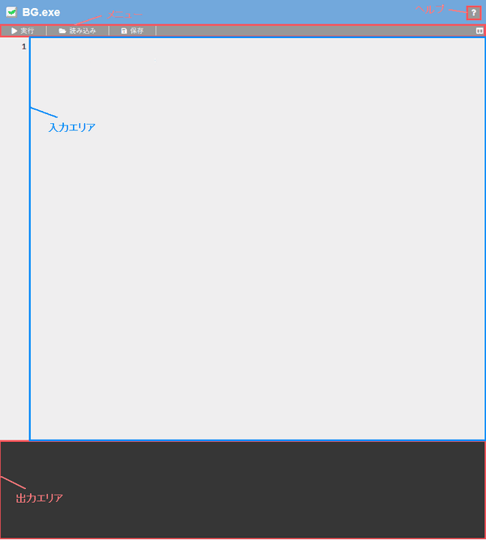
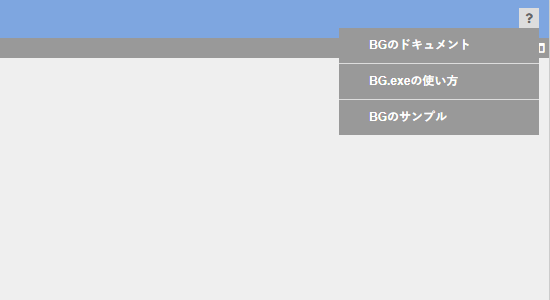

BG.exeの使い方
BG.exeとは？
BG.exeとは、プログラミング言語「BG」の実行環境である。
画面の説明

メニュー
実行
このボタンを押すと入力エリアに記述したプログラムが実行される。
読み込み
このボタンを押すと「.bg」という拡張子のファイルを読み込むことができる。
保存
このボタンを押すと、「program.bg」という名前のファイルでプログラムが保存される。
レイアウト切り替え
このボタンを押すと、入力エリアと出力エリアのレイアウトを横並び、または縦並びに変更する。このボタンはメニューの右端の「」にあたる。
入力エリア
プログラムを入力できる領域である。
出力エリア
プログラムを実行した時にその結果が表示される領域である。
ヘルプ

プログラミング言語「BG」、及びBG.exeの補助ページを開くことができる。
ショートカットキー
入力エリアでは、下記のショートカットキーを使用できる。( ※ 一部のブラウザで使用できない場合あり。 )ただし、Mac OSの場合はCtrlキーをcommandキーに置き換えて入力する。
| キー | 説明 |
|---|---|
| Ctrl + Z | 入力を元に戻す。( アンドゥ ) |
| Ctrl + Q | 入力をやり直す。( リドゥ ) |
| Ctrl + A | テキストを全て選択する。 |
| Ctrl + C | 選択している範囲、または行をコピーする。 |
| Ctrl + X | 選択している範囲、または行を切り取る。( カット ) |
| Ctrl + V | コピーしているテキストを貼り付ける。( ペースト ) |
| Ctrl + / | 選択している行をコメント化、または非コメント化する。 |
| Tab | 選択している行にインデントを追加する。 |
| Shift + Tab | 選択している行のインデントを除去する。 |
推奨ブラウザ
BG.exeは下記のブラウザを推奨する。
- Google Chrome
- Firefox
- Opera
- Safari